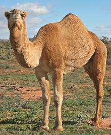
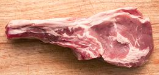
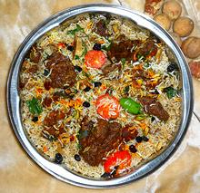

Camel
[Jamal (Arabic); Ngamia (Swahili); Camelus dromedarius]
While Bactrian camels (two humps) are eaten at times, the prferred eating
camel is the Dromedary (one hump). They are slaughtered between 4 and 10
years old, but as the camel ages, its meat becomes tougher and less flavorful.
Camel is eaten in Eritrea, Ethiopia, Saudi Arabia, Egypt,
Syria, Libya, Sudan, and Kazakhstan, and particularly in Somalia and Djibouti
where it is a staple of the cuisine. In ancient Persia, camels were often
spit roasted whole. Camel is also sometimes eaten in Australia, and exported
from there, mostly to the Near East, but also to the U.S. and
Europe. Australian camels are feral, not farmed, so the flavor is different.
Photo by Jjron distributed under license Creative Commons
Attribution-ShareAlike v3.0 Unported.


Mammals

Animals

Search
CloveGarden
SAFARI
Users
|
|
|

Camel meat is a red meat that tastes similar to Beef, but is somewhat
coarser in texture. It is also a little sweeter, due to high glycogen content,
similar to Horse meat. Meat from older camels can be very tough and take long
cooking to be suitable for the table. The hump contains large amounts of white
fat, which is often used to preserve meats, camel and other.
Photo by Olivier Colas distributed under license
Creative Commons
Attribution-ShareAlike v4.0 International.
Camel Milk is very important for some peoples, and key to the
survival of nomads in desert regions. It is, however, difficult to make butter
from camel milk, but some butter is made. It is difficult to get camel milk to
coagulate into curds to make cheese, but experiments have been done and some
is now produced commercially in Mauritania.
Buying: Camel Meat, Milk, and Hump Fat are available from North
American producers. Look for them on-line. These products are also available
in Australia.

Cooking Camel meat is used in dishes from African cuisines.
It is commonly included with vegetables in stews or in rice dishes, such as
the Biryani in the photo. It is generally wet cooked due to toughness, and
how long depends on age.
Photo by Miansari66 contributed to the Public Domain..
|
ao_camel 21044 - www.clovegarden.com
©Andrew Grygus - agryg@clovegarden.com - Photos on this
page not otherwise credited are © cg1 -
Linking to and non-commercial use of this page permitted